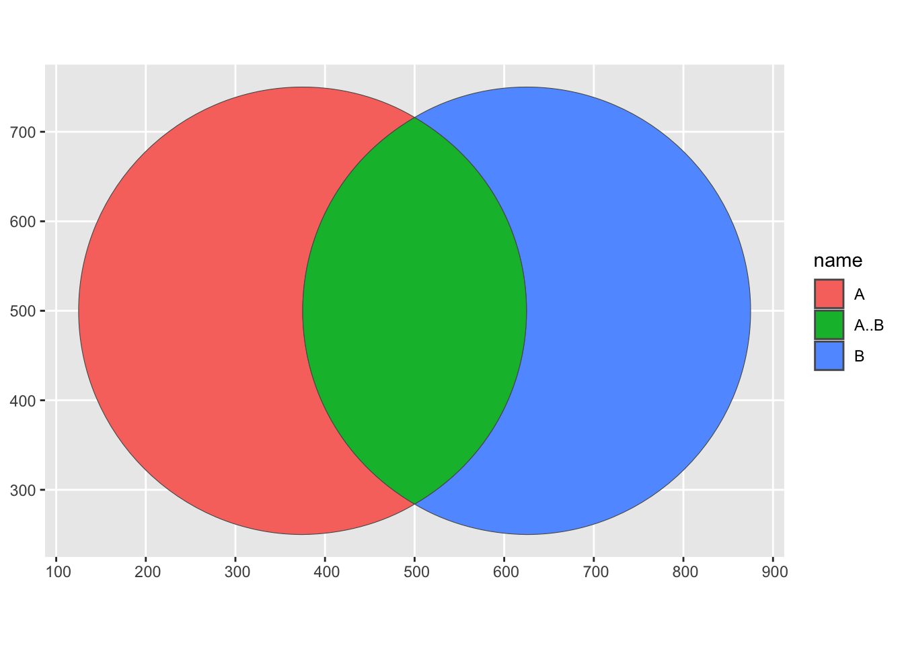

library(tidyverse)
library(ggVennDiagram)
genes <- paste("gene",1:100,sep="")
set.seed(20210419)
x <- list(A=sample(genes,30),
B=sample(genes,50))
ggVennDiagram(x)
This blog post is about making Venn diagrams work in Shiny, and the issues I ran into with shiny::nearPoints(). I show how this impacted my initial approach, and discuss the underlying issue.
TLDR; shiny::nearPoints() doesn’t work with dataframes containing list-columns the way I expected
I have been working on a Shiny app that I will use to plan birdwatching trips. It uses the {ebirdst} package to pull abundance data for hundreds of species of birds in 27x27km tiles in North America. A major feature of the app will be the ability to compare how similar two areas (tiles) are. This compares the abundance for a species in a given tile in a given month. I wanted to include a Venn diagram that shows which species are exclusive to each tile. The user can click on the Venn diagram to see the species associated with each segment of the Venn diagram.
This involves making a venn diagram in ggplot2 and extracting the segment that the user clicks on with nearPoints(). This was more challenging than I had anticipated.
nearPoints() requires:
df: a data frame with x and y coordinates it can interpretcoordinfo: the user click coordinates as captured from the uiI use the ggVennDiagram package to make the venn diagram plot. This package uses ggplot2, but does a lot of pre-processing of the data beforehand. This made it difficult to get access to the df for nearPoints().
This is an example of a ggVennDiagram plot. It takes a list object, turns that into a dataframe, and then uses sf to draw the circles.
library(tidyverse)
library(ggVennDiagram)
genes <- paste("gene",1:100,sep="")
set.seed(20210419)
x <- list(A=sample(genes,30),
B=sample(genes,50))
ggVennDiagram(x)
Looking under the hood of ggVennDiagram() shows the pre-processing steps:
venn <- Venn(x)
data <- process_data(venn)Venn() creates an object with slots representing the two sets A and B
Venn(x)An object of class "Venn"
Slot "sets":
$A
[1] "gene27" "gene76" "gene57" "gene33" "gene78" "gene39" "gene63" "gene41"
[9] "gene66" "gene17" "gene16" "gene69" "gene75" "gene9" "gene68" "gene3"
[17] "gene34" "gene54" "gene19" "gene83" "gene2" "gene40" "gene87" "gene60"
[25] "gene61" "gene24" "gene44" "gene93" "gene53" "gene7"
$B
[1] "gene84" "gene36" "gene37" "gene47" "gene91" "gene46" "gene92"
[8] "gene33" "gene67" "gene73" "gene25" "gene5" "gene63" "gene2"
[15] "gene83" "gene56" "gene77" "gene10" "gene12" "gene95" "gene76"
[22] "gene53" "gene99" "gene19" "gene31" "gene86" "gene80" "gene65"
[29] "gene48" "gene100" "gene89" "gene58" "gene35" "gene30" "gene21"
[36] "gene44" "gene72" "gene18" "gene45" "gene42" "gene1" "gene27"
[43] "gene90" "gene14" "gene43" "gene26" "gene96" "gene17" "gene16"
[50] "gene29"
Slot "names":
[1] "A" "B"process_data() turns those slots into dataframes with sf columns representing the segment polygons.
venn <- Venn(x)
process_data(venn)An object of class "VennPlotData"
Slot "setEdge":
Simple feature collection with 2 features and 5 fields
Geometry type: LINESTRING
Dimension: XY
Bounding box: xmin: 125 ymin: 250 xmax: 875 ymax: 750
CRS: NA
# A tibble: 2 × 6
id geometry component item count name
<chr> <LINESTRING> <chr> <nam> <int> <chr>
1 1 (500 716, 493.065 720.007, 485.954 723.777,… setEdge <chr> 30 A
2 2 (500 284, 506.935 279.998, 514.046 276.243,… setEdge <chr> 50 B
Slot "setLabel":
Simple feature collection with 2 features and 3 fields
Geometry type: POINT
Dimension: XY
Bounding box: xmin: 250 ymin: 780 xmax: 750 ymax: 780
CRS: NA
# A tibble: 2 × 4
id geometry component name
<chr> <POINT> <chr> <chr>
1 1 (250 780) setLabel A
2 2 (750 780) setLabel B
Slot "region":
Simple feature collection with 3 features and 5 fields
Geometry type: POLYGON
Dimension: XY
Bounding box: xmin: 125 ymin: 250 xmax: 875 ymax: 750
CRS: NA
# A tibble: 3 × 6
id geometry component item count name
<chr> <POLYGON> <chr> <lis> <int> <chr>
1 1 ((500 716, 492.317 711.329, 484.878 706.459… region <chr> 19 A
2 2 ((500 284, 507.683 288.649, 515.122 293.497… region <chr> 39 B
3 12 ((507.683 711.328, 515.122 706.458, 522.317… region <chr> 11 A..B The region slot is most important for my purposes. It contains the sf polygons for the segments and the distinct counts exclusive to each segment.
process_data(venn) %>%
.@regionSimple feature collection with 3 features and 5 fields
Geometry type: POLYGON
Dimension: XY
Bounding box: xmin: 125 ymin: 250 xmax: 875 ymax: 750
CRS: NA
# A tibble: 3 × 6
id geometry component item count name
<chr> <POLYGON> <chr> <lis> <int> <chr>
1 1 ((500 716, 492.317 711.329, 484.878 706.459… region <chr> 19 A
2 2 ((500 284, 507.683 288.649, 515.122 293.497… region <chr> 39 B
3 12 ((507.683 711.328, 515.122 706.458, 522.317… region <chr> 11 A..B process_data(venn) %>%
.@region %>%
ggplot(aes(fill = name)) +
geom_sf()
I thought using nearPoints() would be pretty easy once I intercepted the region object from the preprocessing steps. I was wrong.
This basic Shiny app will reproduce the error that nearPoints() generates:
library(shiny)
library(tidyverse)
library(ggVennDiagram)
library(sf)
#ui
ui <- fluidPage(
titlePanel("Shiny Venn Diagram"),
mainPanel(
plotOutput("venn_diagram", click = "plot_click"),
tableOutput("venn_table")
)
)
genes <- paste("gene",1:1000,sep="")
set.seed(20210419)
x <- list(A=sample(genes,300),
B=sample(genes,525))
venn <- Venn(x)
venn_data <- process_data(venn)@region %>%
mutate(centroid = st_point_on_surface(geometry),
x = map_dbl(centroid, 1),
y = map_dbl(centroid, 2)) %>%
select(x, y, name, geometry)
#server
server <- function(input, output){
output$venn_diagram <- renderPlot({
venn_data %>%
ggplot(aes(x, y, fill = name, label = name)) +
geom_sf() +
geom_label()
})
output$venn_table <- renderTable({
req(input$plot_click)
nearPoints(venn_data, #this is the issue
input$plot_click,
threshold = 100)
})
}This is the error:
Warning: Error in <-: number of items to replace is not a multiple of replacement length 104: print.xtable 98: transform 97: func 95: f 94: Reduce 85: do 84: hybrid_chain 83: renderFunc 82: output$venn_table 1: shiny::runApp
Wrapping the venn_data object in st_drop_geometry() drops the sf list-column and turns it back into a regular dataframe.
library(shiny)
library(tidyverse)
library(ggVennDiagram)
library(sf)
#ui
ui <- fluidPage(
titlePanel("Shiny Venn Diagram"),
mainPanel(
plotOutput("venn_diagram", click = "plot_click"),
tableOutput("venn_table")
)
)
genes <- paste("gene",1:1000,sep="")
set.seed(20210419)
x <- list(A=sample(genes,300),
B=sample(genes,525))
venn <- Venn(x)
venn_data <- process_data(venn)@region %>%
mutate(centroid = st_point_on_surface(geometry),
x = map_dbl(centroid, 1),
y = map_dbl(centroid, 2)) %>%
select(x, y, name, geometry)
#server
server <- function(input, output){
output$venn_diagram <- renderPlot({
venn_data %>%
ggplot(aes(x, y, fill = name, label = name)) +
geom_sf() +
geom_label()
})
output$venn_table <- renderTable({
req(input$plot_click)
nearPoints(st_drop_geometry(venn_data), #the fix
input$plot_click,
threshold = 100)
})
}This is a working example of a Venn diagram in Shiny. input$plot_click captures the coordinates of the click and nearPoints() returns a dataframe of the information about the segment the user clicked on. The ID of the segment is in the name column.